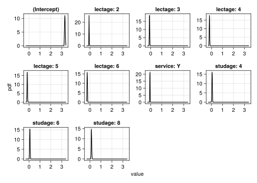
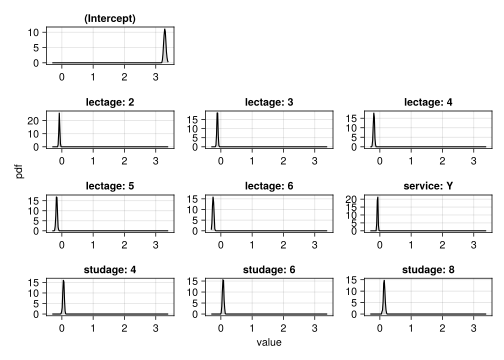

![]()
Code
progress = falseprogress = falseusing MixedModels
using RandomFor the examples here, we’ll be once again using a model of the insteval dataset.
insteval = MixedModels.dataset("insteval")
ie1 = fit(MixedModel,
@formula(y ~ 1 + studage + lectage + service + (1|s) + (1|d) + (1|dept)),
insteval; progress)| Est. | SE | z | p | σ_s | σ_d | σ_dept | |
| (Intercept) | 3.2908 | 0.0324 | 101.45 | <1e-99 | 0.3264 | 0.5106 | 0.0787 |
| studage: 4 | 0.0519 | 0.0232 | 2.24 | 0.0249 | |||
| studage: 6 | 0.0721 | 0.0240 | 3.01 | 0.0026 | |||
| studage: 8 | 0.1363 | 0.0264 | 5.17 | <1e-06 | |||
| lectage: 2 | -0.0808 | 0.0154 | -5.25 | <1e-06 | |||
| lectage: 3 | -0.1102 | 0.0167 | -6.59 | <1e-10 | |||
| lectage: 4 | -0.1892 | 0.0196 | -9.65 | <1e-21 | |||
| lectage: 5 | -0.1644 | 0.0214 | -7.68 | <1e-13 | |||
| lectage: 6 | -0.2460 | 0.0205 | -12.01 | <1e-32 | |||
| service: Y | -0.0727 | 0.0135 | -5.40 | <1e-07 | |||
| Residual | 1.1762 |
One of the advantages of MixedModels.jl compared to its predecessors is its speed, which means that techniques that require fitting many different models are more viable. One such technique is the parametric bootstrap, which is implemented in the function parametricbootstrap:
@time pb1 = parametricbootstrap(MersenneTwister(42), 100, ie1; progress)143.974439 seconds (4.35 M allocations: 309.726 MiB, 0.06% gc time, 0.91% compilation time)MixedModelBootstrap with 100 samples
parameter min q25 median mean q75 ⋯
┌─────────────────────────────────────────────────────────────────────────
1 │ β01 3.21783 3.26358 3.28986 3.29053 3.31213 ⋯
2 │ β02 -0.0139569 0.038696 0.0548509 0.0543033 0.0691479 ⋯
3 │ β03 0.0195404 0.0601318 0.0744778 0.0737247 0.0880094 ⋯
4 │ β04 0.0660657 0.123001 0.141956 0.143059 0.161691 ⋯
5 │ β05 -0.125172 -0.0900465 -0.0821355 -0.0829556 -0.0736902 ⋯
6 │ β06 -0.158731 -0.126321 -0.114572 -0.114729 -0.10407 ⋯
7 │ β07 -0.248297 -0.203881 -0.189177 -0.192144 -0.177192 ⋯
8 │ β08 -0.229774 -0.180099 -0.168365 -0.169053 -0.156476 ⋯
9 │ β09 -0.300539 -0.26488 -0.249537 -0.247632 -0.229222 ⋯
10 │ β10 -0.105656 -0.0818337 -0.0744016 -0.075008 -0.0670841 ⋯
11 │ σ 1.16957 1.17411 1.17636 1.17617 1.17837 ⋯
12 │ σ1 0.303494 0.322677 0.326415 0.326131 0.329607 ⋯
13 │ σ2 0.474794 0.500079 0.508222 0.508323 0.516091 ⋯
14 │ σ3 0.0 0.0541107 0.0704625 0.0702876 0.0876531 ⋯
15 │ θ1 0.257713 0.274375 0.277284 0.277288 0.2808 ⋯
16 │ θ2 0.404015 0.425369 0.432303 0.432192 0.438206 ⋯
17 │ θ3 0.0 0.045864 0.0597909 0.0597646 0.0743971 ⋯The bootstrap object has several properties defined, perhaps the most relevant are:
# row table of fixed effect coefficient estimates, errors and p values
pb1.coefpvalues1000-element Vector{@NamedTuple{iter::Int64, coefname::Symbol, β::Float64, se::Float64, z::Float64, p::Float64}}:
(iter = 1, coefname = Symbol("(Intercept)"), β = 3.2844928279434065, se = 0.032524210677454375, z = 100.98608880984162, p = 0.0)
(iter = 1, coefname = Symbol("studage: 4"), β = 0.06545758686582491, se = 0.023497284000323155, z = 2.78575119000667, p = 0.005340384547276788)
(iter = 1, coefname = Symbol("studage: 6"), β = 0.07436675005559862, se = 0.024299662954631682, z = 3.060402532925824, p = 0.0022103969202858778)
(iter = 1, coefname = Symbol("studage: 8"), β = 0.1344127262525718, se = 0.026741312887550595, z = 5.026407148287308, p = 4.997542824491115e-7)
(iter = 1, coefname = Symbol("lectage: 2"), β = -0.08689967179369408, se = 0.015507345987220238, z = -5.6037746152893595, p = 2.09733396977708e-8)
(iter = 1, coefname = Symbol("lectage: 3"), β = -0.11271177326879837, se = 0.016859623249765785, z = -6.685307945440843, p = 2.304395511113411e-11)
(iter = 1, coefname = Symbol("lectage: 4"), β = -0.19020613648594675, se = 0.01976629678254787, z = -9.622750208520811, p = 6.409411635232184e-22)
(iter = 1, coefname = Symbol("lectage: 5"), β = -0.16073781065271658, se = 0.021585081491058315, z = -7.446708538918545, p = 9.569771650128114e-14)
(iter = 1, coefname = Symbol("lectage: 6"), β = -0.2433509853336542, se = 0.020669173607966728, z = -11.77361949487216, p = 5.338388678449715e-32)
(iter = 1, coefname = Symbol("service: Y"), β = -0.0560241884982609, se = 0.013588893568175118, z = -4.122792500889719, p = 3.743068523497779e-5)
⋮
(iter = 100, coefname = Symbol("studage: 4"), β = 0.025227349131417828, se = 0.023200807563855428, z = 1.0873478891622528, p = 0.27688309181244464)
(iter = 100, coefname = Symbol("studage: 6"), β = 0.07088408313765594, se = 0.02400554782671742, z = 2.952820891625901, p = 0.003148846053869982)
(iter = 100, coefname = Symbol("studage: 8"), β = 0.10704597045770158, se = 0.02643330877571195, z = 4.049662165489474, p = 5.129162474702447e-5)
(iter = 100, coefname = Symbol("lectage: 2"), β = -0.0731927575822571, se = 0.015423996688310335, z = -4.745382086196182, p = 2.0811311858175712e-6)
(iter = 100, coefname = Symbol("lectage: 3"), β = -0.08389108088590261, se = 0.016760437632691503, z = -5.005303723231648, p = 5.577401856280357e-7)
(iter = 100, coefname = Symbol("lectage: 4"), β = -0.18179640493121893, se = 0.019656009990827204, z = -9.248896648712387, p = 2.2682189479956574e-20)
(iter = 100, coefname = Symbol("lectage: 5"), β = -0.14755537474768485, se = 0.02145735710981732, z = -6.876679825595775, p = 6.1263588182793464e-12)
(iter = 100, coefname = Symbol("lectage: 6"), β = -0.22400745235549124, se = 0.020548647689622977, z = -10.901323324970651, p = 1.1359305452386851e-27)
(iter = 100, coefname = Symbol("service: Y"), β = -0.07461312463098355, se = 0.01352818587611706, z = -5.515382869088685, p = 3.4802146900712763e-8)# row table of all parameter estimates
pb1.allpars(iter = [1, 1, 1, 1, 1, 1, 1, 1, 1, 1 … 100, 100, 100, 100, 100, 100, 100, 100, 100, 100], type = ["β", "β", "β", "β", "β", "β", "β", "β", "β", "β" … "β", "β", "β", "β", "β", "β", "σ", "σ", "σ", "σ"], group = Union{Missing, String}[missing, missing, missing, missing, missing, missing, missing, missing, missing, missing … missing, missing, missing, missing, missing, missing, "s", "d", "dept", "residual"], names = Union{Missing, String}["(Intercept)", "studage: 4", "studage: 6", "studage: 8", "lectage: 2", "lectage: 3", "lectage: 4", "lectage: 5", "lectage: 6", "service: Y" … "lectage: 2", "lectage: 3", "lectage: 4", "lectage: 5", "lectage: 6", "service: Y", "(Intercept)", "(Intercept)", "(Intercept)", missing], value = [3.2844928279434065, 0.06545758686582491, 0.07436675005559862, 0.1344127262525718, -0.08689967179369408, -0.11271177326879837, -0.19020613648594675, -0.16073781065271658, -0.2433509853336542, -0.0560241884982609 … -0.0731927575822571, -0.08389108088590261, -0.18179640493121893, -0.14755537474768485, -0.22400745235549124, -0.07461312463098355, 0.32664795073240843, 0.5286560253303741, 0.09096234925764528, 1.1778772795686734])# row table of fixed effect estimates
pb1.β1000-element Vector{@NamedTuple{iter::Int64, coefname::Symbol, β::Float64}}:
(iter = 1, coefname = Symbol("(Intercept)"), β = 3.2844928279434065)
(iter = 1, coefname = Symbol("studage: 4"), β = 0.06545758686582491)
(iter = 1, coefname = Symbol("studage: 6"), β = 0.07436675005559862)
(iter = 1, coefname = Symbol("studage: 8"), β = 0.1344127262525718)
(iter = 1, coefname = Symbol("lectage: 2"), β = -0.08689967179369408)
(iter = 1, coefname = Symbol("lectage: 3"), β = -0.11271177326879837)
(iter = 1, coefname = Symbol("lectage: 4"), β = -0.19020613648594675)
(iter = 1, coefname = Symbol("lectage: 5"), β = -0.16073781065271658)
(iter = 1, coefname = Symbol("lectage: 6"), β = -0.2433509853336542)
(iter = 1, coefname = Symbol("service: Y"), β = -0.0560241884982609)
⋮
(iter = 100, coefname = Symbol("studage: 4"), β = 0.025227349131417828)
(iter = 100, coefname = Symbol("studage: 6"), β = 0.07088408313765594)
(iter = 100, coefname = Symbol("studage: 8"), β = 0.10704597045770158)
(iter = 100, coefname = Symbol("lectage: 2"), β = -0.0731927575822571)
(iter = 100, coefname = Symbol("lectage: 3"), β = -0.08389108088590261)
(iter = 100, coefname = Symbol("lectage: 4"), β = -0.18179640493121893)
(iter = 100, coefname = Symbol("lectage: 5"), β = -0.14755537474768485)
(iter = 100, coefname = Symbol("lectage: 6"), β = -0.22400745235549124)
(iter = 100, coefname = Symbol("service: Y"), β = -0.07461312463098355)# summary table in wide format
pb1.tblTable with 18 columns and 100 rows:
obj β01 β02 β03 β04 β05 ⋯
┌────────────────────────────────────────────────────────────��────────
1 │ 2.38696e5 3.28449 0.0654576 0.0743668 0.134413 -0.0868997 ⋯
2 │ 2.37312e5 3.32203 0.0517903 0.0670178 0.140742 -0.0950906 ⋯
3 │ 2.37357e5 3.23378 0.116201 0.12476 0.207755 -0.0790354 ⋯
4 │ 2.36992e5 3.37017 0.0338393 0.0450009 0.0898785 -0.0679428 ⋯
5 │ 2.37374e5 3.29213 0.0747803 0.0736114 0.123649 -0.0853712 ⋯
6 │ 2.38354e5 3.23252 0.0557169 0.0965588 0.168224 -0.110282 ⋯
7 ��� 2.38595e5 3.32446 0.059913 0.0739455 0.144132 -0.100117 ⋯
8 │ 237394.0 3.33964 0.000101602 0.0394911 0.111735 -0.0740082 ⋯
9 │ 2.37038e5 3.23416 0.0288773 0.0792363 0.143171 -0.0754491 ⋯
10 │ 2.37538e5 3.32298 0.0418344 0.0479324 0.117366 -0.0843251 ⋯
11 │ 2.37919e5 3.34143 0.00910533 0.0340325 0.109248 -0.087165 ⋯
12 │ 2.37707e5 3.24528 0.0830967 0.110315 0.193995 -0.0996083 ⋯
13 │ 2.37413e5 3.28979 0.053302 0.0813591 0.134691 -0.0804611 ⋯
14 │ 2.37776e5 3.2454 0.0078669 0.0846662 0.11677 -0.0655534 ⋯
15 │ 2.37429e5 3.2731 0.0656087 0.0609474 0.12065 -0.0701581 ⋯
16 │ 2.37344e5 3.26359 0.0708762 0.0925205 0.148036 -0.0778408 ⋯
17 │ 237108.0 3.28631 0.0531506 0.0802238 0.136806 -0.0839233 ⋯
⋮ │ ⋮ ⋮ ⋮ ⋮ ⋮ ⋮ ⋱We can speed up the bootstrap even further by loosening the convergence criteria for the individual fits. parametricbootstrap allows passing in a NamedTuple of modifiers to the optimisation process, called optsum_overrides (the internal structure for the optimization configuration and results in called OptSummary and is stored in the optsum field). The parameter ftol_rel controls the tolerance for the relative change in the objective between optimizer iterations before the model is considered converged. If we set ftol_rel=0.8, then this is approximately equivalent to doing the comparison in single precision. More directly, lowering the fit quality for each replicate will reduce the quality of each replicate, but this may be more than compensated for by the ability to fit a much larger number of replicates in the same time.
# would generally recommend something like 1e-8, which is approximately single precision, this is set here to speed up things for the course
optsum_overrides = (; ftol_rel=1e-4)
@time pb1a = parametricbootstrap(MersenneTwister(42), 500, ie1; optsum_overrides, progress)155.092690 seconds (927.34 k allocations: 82.112 MiB, 0.01% gc time, 0.06% compilation time)MixedModelBootstrap with 500 samples
parameter min q25 median mean q75 ⋯
┌────────────────────────────────────────────────────────────────────────
1 │ β01 3.20299 3.26494 3.2899 3.29008 3.31293 ⋯
2 │ β02 -0.0283391 0.0378083 0.0532707 0.0524077 0.0683259 ⋯
3 │ β03 0.00720724 0.056569 0.0732217 0.073101 0.0885576 ⋯
4 │ β04 0.0638129 0.121894 0.139395 0.138754 0.156193 ⋯
5 │ β05 -0.122304 -0.0912163 -0.080359 -0.0807677 -0.0708919 ⋯
6 │ β06 -0.169496 -0.122819 -0.110649 -0.110771 -0.0987061 ⋯
7 │ β07 -0.250192 -0.204949 -0.189633 -0.190552 -0.176709 ⋯
8 │ β08 -0.225879 -0.180139 -0.165734 -0.165591 -0.150571 ⋯
9 │ β09 -0.306457 -0.262256 -0.246656 -0.246079 -0.228992 ⋯
10 │ β10 -0.111311 -0.0811711 -0.072522 -0.0725597 -0.0623461 ⋯
11 │ σ 1.15547 1.16376 1.16765 1.1689 1.17438 ⋯
12 │ σ1 0.220708 0.325071 0.383176 0.367272 0.421881 ⋯
13 │ σ2 0.364374 0.573198 0.846797 0.789478 0.912774 ⋯
14 │ σ3 0.842894 1.18135 1.26918 1.26347 1.30106 ⋯
15 │ θ1 0.186657 0.27578 0.328035 0.314441 0.362649 ⋯
16 │ θ2 0.307885 0.490095 0.727427 0.675862 0.78239 ⋯
17 │ θ3 0.721848 1.01366 1.08494 1.08087 1.11703 ⋯using CairoMakieWe can create a custom display of the bootstrap densities for the fixed effects and variance components. We’ll build this plot piecewise using AlgebraOfGraphics.
We start by grabbing all the parameter estimates and placing them in a dataframe for easier manipulation.
using AlgebraOfGraphics
using AlgebraOfGraphics: density # override Makie.density
using DataFrames
df = DataFrame(pb1a.allpars)| Row | iter | type | group | names | value |
|---|---|---|---|---|---|
| Int64 | String | String? | String? | Float64 | |
| 1 | 1 | β | missing | (Intercept) | 3.28408 |
| 2 | 1 | β | missing | studage: 4 | 0.0638134 |
| 3 | 1 | β | missing | studage: 6 | 0.0697497 |
| 4 | 1 | β | missing | studage: 8 | 0.130544 |
| 5 | 1 | �� | missing | lectage: 2 | -0.0869565 |
| 6 | 1 | β | missing | lectage: 3 | -0.110721 |
| 7 | 1 | β | missing | lectage: 4 | -0.187548 |
| 8 | 1 | β | missing | lectage: 5 | -0.159629 |
| 9 | 1 | β | missing | lectage: 6 | -0.241548 |
| 10 | 1 | β | missing | service: Y | -0.0578331 |
| 11 | 1 | σ | s | (Intercept) | 0.350074 |
| 12 | 1 | σ | d | (Intercept) | 1.01893 |
| 13 | 1 | σ | dept | (Intercept) | 1.24209 |
| ⋮ | ⋮ | ⋮ | ⋮ | ⋮ | ⋮ |
| 6989 | 500 | β | missing | studage: 6 | 0.0732301 |
| 6990 | 500 | β | missing | studage: 8 | 0.128215 |
| 6991 | 500 | β | missing | lectage: 2 | -0.0675102 |
| 6992 | 500 | β | missing | lectage: 3 | -0.10197 |
| 6993 | 500 | β | missing | lectage: 4 | -0.175881 |
| 6994 | 500 | β | missing | lectage: 5 | -0.158475 |
| 6995 | 500 | β | missing | lectage: 6 | -0.255234 |
| 6996 | 500 | β | missing | service: Y | -0.0724982 |
| 6997 | 500 | σ | s | (Intercept) | 0.378387 |
| 6998 | 500 | σ | d | (Intercept) | 0.447546 |
| 6999 | 500 | σ | dept | (Intercept) | 1.06067 |
| 7000 | 500 | σ | residual | missing | 1.17374 |
We then split the parameters up into the fixed effects, random effects and the residual standard deviation.
fe = subset(df, :group => ByRow(ismissing))
re = subset(df, :group => ByRow(g -> !ismissing(g) && g != "residual"))
resid = subset(df, :group => ByRow(g -> !ismissing(g) && g == "residual"))| Row | iter | type | group | names | value |
|---|---|---|---|---|---|
| Int64 | String | String? | String? | Float64 | |
| 1 | 1 | σ | residual | missing | 1.17659 |
| 2 | 2 | σ | residual | missing | 1.16269 |
| 3 | 3 | σ | residual | missing | 1.16128 |
| 4 | 4 | σ | residual | missing | 1.16787 |
| 5 | 5 | σ | residual | missing | 1.16338 |
| 6 | 6 | σ | residual | missing | 1.16883 |
| 7 | 7 | σ | residual | missing | 1.17022 |
| 8 | 8 | σ | residual | missing | 1.16208 |
| 9 | 9 | σ | residual | missing | 1.17053 |
| 10 | 10 | σ | residual | missing | 1.16385 |
| 11 | 11 | σ | residual | missing | 1.17993 |
| 12 | 12 | σ | residual | missing | 1.17563 |
| 13 | 13 | σ | residual | missing | 1.16173 |
| ⋮ | ⋮ | ⋮ | ⋮ | ⋮ | ⋮ |
| 489 | 489 | σ | residual | missing | 1.16205 |
| 490 | 490 | σ | residual | missing | 1.16089 |
| 491 | 491 | σ | residual | missing | 1.1758 |
| 492 | 492 | σ | residual | missing | 1.17573 |
| 493 | 493 | σ | residual | missing | 1.17036 |
| 494 | 494 | σ | residual | missing | 1.17232 |
| 495 | 495 | σ | residual | missing | 1.16437 |
| 496 | 496 | σ | residual | missing | 1.16701 |
| 497 | 497 | σ | residual | missing | 1.16876 |
| 498 | 498 | σ | residual | missing | 1.16375 |
| 499 | 499 | σ | residual | missing | 1.16358 |
| 500 | 500 | σ | residual | missing | 1.17374 |
We plot the fixed effects:
plt_fe = data(fe) * mapping(:value; layout=:names) * density()
draw(plt_fe;
facet=(;linkxaxes=:none, linkyaxes=:none))
and then tweak the layout a little:
plt_fe = data(fe) * mapping(:value; layout=:names) * density()
layout = [(1, 1),
(2, 1), (2, 2), (2, 3),
(3, 1), (3, 2), (3, 3),
(4, 1), (4, 2), (4, 3)]
draw(plt_fe;
facet=(;linkxaxes=:none, linkyaxes=:none),
palettes=(;layout))
Next, we plot the random effects:
plt_re = data(re) * mapping(:value; row=:group, col=:names) * density()
draw(plt_re; facet=(;linkxaxes=:none, linkyaxes=:none))and the residual SD:
plt_resid = data(resid) * mapping(:value) * density()
draw(plt_resid; axis=(;title="Residual SD"))Finally, we put all the plots together into a single figure.
let f, facet, layout, axis
f = Figure(; size=(800, 600))
facet = (;linkxaxes=:none, linkyaxes=:none)
axis=(; xlabel="estimate")
layout = [(1, 1),
(2, 1), (2, 2), (2, 3),
(3, 1), (3, 2), (3, 3),
(4, 1), (4, 2), (4, 3)]
Label(f[0, 1], "Fixed effects"; tellwidth=false, fontsize=20)
draw!(f[1:5, 1], plt_fe; facet, axis, palettes=(;layout))
Label(f[0, 2], "Variance components"; tellwidth=false, fontsize=20)
draw!(f[1:4, 2], plt_re; facet, axis)
draw!(f[5, 2], plt_resid; facet, axis)
Label(f[end+1, :], "Density of bootstrapped estimates", fontsize=30)
f
endMixedModelsMakie.ridgeplotMixedModelsMakie defines coefplot for bootstrap objects:
using MixedModelsMakie
coefplot(pb1a; show_intercept=false)The bootstrap hower provides a much richer estimate of uncertainty, which we can see with ridgeplot:
ridgeplot(pb1a)ridgeplot supports most of the same options as coefplot (and also has a mutating variant ridgeplot!):
ridgeplot(pb1a; show_intercept=false)Ridge plots are sometimes also called joy plots in other languages because they look like a certain Joy Division album cover.
MixedModels.jl uses a Wald confidence interval by default:
confint(ie1)DictTable with 2 columns and 10 rows:
coef lower upper
────────────┬───────────��───────────
(Intercept) │ 3.22721 3.35435
studage: 4 │ 0.00654108 0.0973544
studage: 6 │ 0.0251566 0.119089
studage: 8 │ 0.0845873 0.187982
lectage: 2 │ -0.110898 -0.0506082
lectage: 3 │ -0.142964 -0.0774094
lectage: 4 │ -0.227587 -0.15075
lectage: 5 │ -0.206382 -0.122478
lectage: 6 │ -0.286144 -0.205849
service: Y │ -0.0991229 -0.0463103The critical values for a given confidence level are obtained from the standard normal, i.e. treating the \(t\)-values as \(z\)-values. This is a reasonable approximation for models fit to more than a few dozen observations, because the \(t(\nu)\) rapidly converges to \(z\) as \(\nu\rightarrow\inf\) and is nigh instinguishable for \(\nu > 30\).
A more precise definition of the residual (i.e. denominator) degrees of freedom for mixed model is somewhat challenging, but for even moderately sized datasets, the point is largely moot.
MixedModels.jl also supports computing confidence intervals from the bootstrapped values.
There is a third way to compute confidence intervals in MixedModels.jl: via the likelihoood profile. However, this code is substantially newer and less well tested and may fail for some models (including some of the examples in this course).
The default method for the a bootstrapped confidence interval is the shortest (contiguous) coverage interval. Per definition, the shortest coverage interval is also the highest density interval. Note that the confidence interval is always a single interval and never the union of disjoint intervals, which may or may not be desirable for multimodal distribution. However, multimodal distributions should not generally arise in the parametric bootstrap.
confint(pb1a)DictTable with 2 columns and 14 rows:
par lower upper
────┬──────────────────────
β01 │ 3.2257 3.35708
β02 │ 0.0086203 0.0960707
β03 │ 0.0257096 0.117076
β04 │ 0.0913164 0.197404
β05 │ -0.111489 -0.0507315
β06 │ -0.142169 -0.0771448
β07 │ -0.235839 -0.156592
β08 │ -0.217021 -0.12986
β09 │ -0.286667 -0.204071
β10 │ -0.101496 -0.0489058
σ │ 1.15818 1.18167
σ1 │ 0.252925 0.439
σ2 │ 0.471268 1.01893
σ3 │ 1.01487 1.63069confint(pb1a; method=:shortest)DictTable with 2 columns and 14 rows:
par lower upper
────┬──────────────────────
β01 │ 3.2257 3.35708
β02 │ 0.0086203 0.0960707
β03 │ 0.0257096 0.117076
β04 │ 0.0913164 0.197404
β05 │ -0.111489 -0.0507315
β06 │ -0.142169 -0.0771448
β07 │ -0.235839 -0.156592
β08 ��� -0.217021 -0.12986
β09 │ -0.286667 -0.204071
β10 │ -0.101496 -0.0489058
σ │ 1.15818 1.18167
σ1 │ 0.252925 0.439
σ2 │ 0.471268 1.01893
σ3 │ 1.01487 1.63069The :equaltail method constructs the confidence that has equal tail probability, which is equivalent to the quantile-based interval. This interval is most comparable to the Wald and profile-based intervals.
confint(pb1a; method=:equaltail)DictTable with 2 columns and 14 rows:
par lower upper
────┬───────────────────────
β01 │ 3.22657 3.35983
β02 │ 0.00330878 0.0949412
β03 │ 0.0279016 0.119836
β04 │ 0.0785097 0.192055
β05 │ -0.110169 -0.0490092
β06 │ -0.144158 -0.0787608
β07 │ -0.232093 -0.149827
β08 │ -0.212548 -0.125297
β09 │ -0.288305 -0.205441
β10 │ -0.0997842 -0.0457336
σ │ 1.15829 1.18212
σ1 │ 0.251931 0.438784
σ2 │ 0.460721 1.01502
σ3 │ 1.01832 1.6439